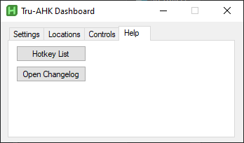
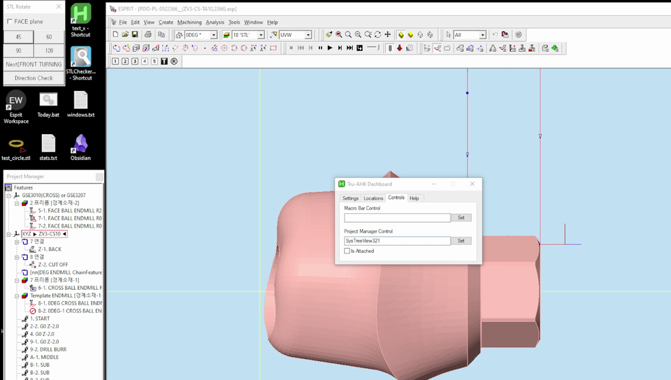

Tru-AHK Dashboard
Opening the Dashboard

- Click the system tray icon.
- Right click the master_switch.exe icon.
- Select the "Open Dashboard" option.
Alternatively you can press Ctrl + ,
The Settings Tab
- Language
- Switch between English or Korean. Changing the language reloads the script. Make sure to set it to the language that Esprit is set to.
- F12 Mode
-
- Disabled
- Pressing F12 will not close any Esprit instances.
- Active Instance
- Pressing F12 will only close the currently active Esprit instance.
- All Instances
- Pressing F12 will close all Esprit instances.
- E Key Functionality
-
- Line
- The E key will draw a 20mm line.
- Line and Border
- The E key will draw a 20mm line and extrude it.
- W as Delete Key
- If enabled, the W key will be remapped to the Delete key.
- Auto-recycle STL Files
- If enabled, after pressing G4 or Shift+G4, the associated STL file will be moved to the recycling bin after the front turning step.
The Locations Tab
To set a location, press the button next to the associated input field to open a folder selection popup, then navigate to the location of the associated folder.
- Basic Setting Path
- The location of the basic settings folder.
- STL Path
- The location of the STL file folder.
The Help Tab

- Hotkey List
- Opens the document listing all the available hotkeys.
- Open Changelog
- Opens the document that outlines the changes done to the current version of the hotkey system.
The Controls Tab

In order for some of the hotkeys to function, the program must know the ID of the element it has to interact with. Unfortunately the IDs for some of the elements vary, so they must be set manually.
- Macro Bar Control

- This one must be set for the macro bar hotkeys to work.
- Project Manager Control

- This one must be set for some of the operation hotkeys to work.
- If the macro bar is attached to the Esprit window, check the "Is Attached" checkbox. Otherwise, if it is unattached, leave it unchecked.
How to set a control
- Press the set button on the dashboard.
- Hover over the corresponding control and left click.